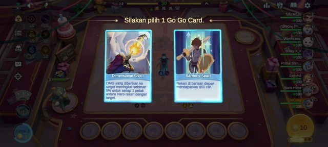
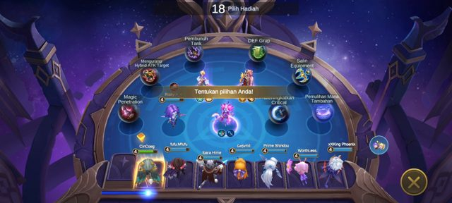
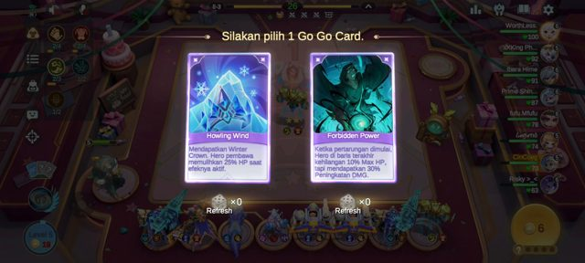
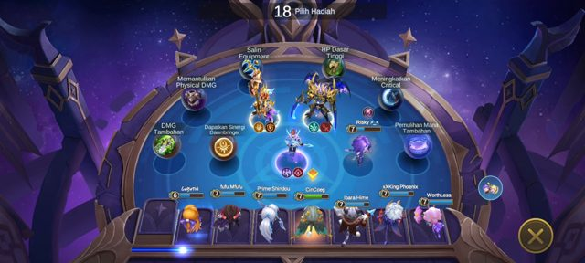
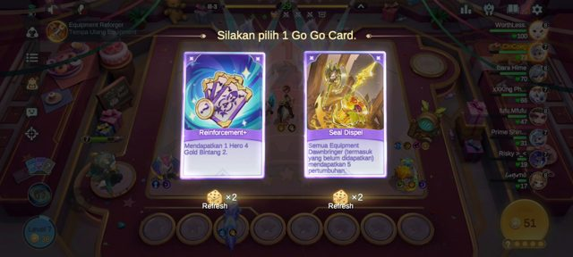
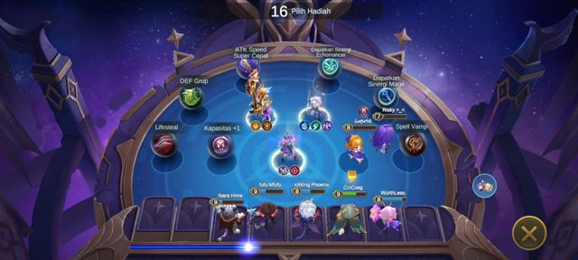
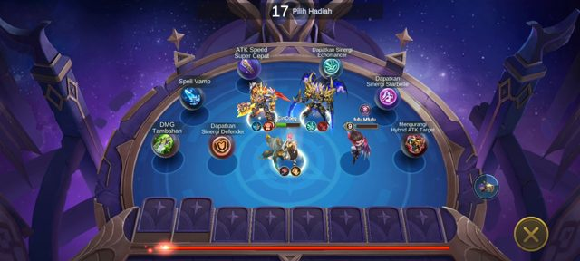

Ringkasan
Peringkat
-
HP akhir
44
Babak terbaca
I-1 – V-1 (23 babak), kehilangan HP di 6 babak
Pertandingan
ID - · poin -
Pemain: CinCoeg · tata letak ponsel
Catatan otomatis
- Rekaman berhenti di V-1 tanpa layar hasil: peringkat akhir tidak diketahui.
- HP hilang per fase: Fase I −18, Fase II −9, Fase III −13, Fase IV −16. Terbanyak di Fase I.
- 8 babak beruntun tanpa kehilangan HP (sampai III-3).
- 4 kekalahan beruntun (sampai II-1).
- Level 7 pertama terlihat di II-6.
- Level 8 pertama terlihat di III-3.
- Level 9 pertama terlihat di III-6.
- Rata-rata Gold di awal babak Fase II: 17 (bunga kecil).
- Rata-rata Gold di awal babak Fase III: 37.
HP per babak
CinCoegfufu.MfufuWorthLessIbara HimexXKing PhLeqeTlöRiskyPrime Shin
Timeline (CinCoeg)
| Babak | HP awal | Perubahan | Gold awal | Level | Kejadian |
|---|---|---|---|---|---|
| I-1 | 100 | +0 tidak kehilangan HP | 2 | 3 | |
| I-2 | 100 | -6 kalah | 6 | 4 | Pilih Go Go Card |
| I-3 | 94 | -4 kalah | 4 | 4 | |
| I-4 | 90 | -8 kalah | 2 | 4 | Go Go Box |
| II-1 | 82 | -9 kalah | 6 | 4 | |
| II-2 | 73 | +0 tidak kehilangan HP | 0 | 4 | |
| II-3 | 73 | +0 tidak kehilangan HP | 6 | 5 | Pilih Go Go Card (pilihan: Forbidden Power, Howling Wind) |
| II-4 | 73 | +0 tidak kehilangan HP | 31 | 5 | |
| II-5 | 73 | +0 tidak kehilangan HP | 24 | 6 | |
| II-6 | 73 | +0 tidak kehilangan HP | 37 | 7 | Go Go Box |
| III-1 | 73 | +0 tidak kehilangan HP | 21 | 7 | |
| III-2 | 73 | +0 tidak kehilangan HP | 36 | 7 | |
| III-3 | 73 | +0 tidak kehilangan HP | 51 | 8 | Pilih Go Go Card (pilihan: Seal Dispel) |
| III-4 | 73 | -13 kalah | 29 | 8 | |
| III-5 | 60 | +0 tidak kehilangan HP | 29 | 8 | |
| III-6 | 60 | +0 tidak kehilangan HP | 54 | 9 | Go Go Box |
| IV-1 | 60 | +0 tidak kehilangan HP | 17 | 9 | |
| IV-2 | 60 | +0 tidak kehilangan HP | 30 | 9 | |
| IV-3 | 60 | +0 tidak kehilangan HP | 31 | 9 | |
| IV-4 | 60 | -16 kalah | 34 | 9 | |
| IV-5 | 44 | +0 tidak kehilangan HP | 31 | 9 | |
| IV-6 | 44 | +0 tidak kehilangan HP | 25 | 9 | Go Go Box |
| V-1 | 44 | - | 24 | 9 |
HP semua pemain
| Pemain | I-1 | I-2 | I-3 | I-4 | II-1 | II-2 | II-3 | II-4 | II-5 | II-6 | III-1 | III-2 | III-3 | III-4 | III-5 | III-6 | IV-1 | IV-2 | IV-3 | IV-4 | IV-5 | IV-6 | V-1 |
|---|---|---|---|---|---|---|---|---|---|---|---|---|---|---|---|---|---|---|---|---|---|---|---|
| fufu.Mfufu | 100 | 100 | 95 | 95 | 87 | 87 | 78 | 78 | 71 | 71 | 59 | 47 | 47 | 47 | 26 | 26 | 26 | 26 | 26 | 26 | 26 | 26 | 9 |
| CinCoeg | 100 | 100 | 94 | 90 | 82 | 73 | 73 | 73 | 73 | 73 | 73 | 73 | 73 | 73 | 60 | 60 | 60 | 60 | 60 | 60 | 44 | 44 | 44 |
| WorthLess | 100 | 100 | 100 | 100 | 100 | 100 | 100 | 100 | 100 | 100 | 100 | 100 | 100 | 100 | 100 | 100 | 85 | 69 | 49 | 49 | 30 | 12 | |
| Ibara Hime | 100 | 100 | 100 | 95 | 91 | 91 | 91 | 91 | 91 | 80 | 80 | 80 | 70 | 70 | 52 | 32 | 10 | 10 | |||||
| xXKing Ph | 100 | 100 | 100 | 100 | 100 | 92 | 92 | 92 | 92 | 80 | 80 | 80 | 66 | 66 | 66 | 54 | 40 | 15 | |||||
| LeqeTlö | 100 | 100 | 100 | 94 | 94 | 84 | 74 | 74 | 62 | 55 | 45 | 35 | 17 | 17 | 17 | 1 | 1 | ||||||
| Risky | 100 | 100 | 95 | 88 | 81 | 73 | 63 | 63 | 56 | 46 | 31 | 19 | 19 | 19 | 19 | 19 | 4 | ||||||
| Prime Shin | 100 | 100 | 96 | 96 | 96 | 96 | 87 | 87 | 74 | 74 | 60 | 44 | 31 | 31 | 6 |
Kejadian
| Waktu | Babak | Kejadian | Detail |
|---|---|---|---|
| 01:15 | I-2 | Pilih Go Go Card | |
| 01:15 | I-2 | Panel DMG | |
| 04:45 | I-4 | Go Go Box | |
| 07:20 | II-3 | Pilih Go Go Card | pilihan: Forbidden Power, Howling Wind |
| 11:50 | II-6 | Go Go Box | |
| 14:40 | III-3 | Pilih Go Go Card | pilihan: Seal Dispel |
| 19:50 | III-6 | Go Go Box | |
| 27:40 | IV-6 | Go Go Box |
Frame kunci







Catatan metode
- Tata letak: ponsel; frame tiap 5 detik; OCR: windows.
- HP dari panjang bar: HP = (panjang − 8.0) / 0.945, dikalibrasi dari 1207 angka HP yang terbaca OCR.
- Angka HP hanya diambil dari teks yang ujung kanannya sejajar dengan ujung kanan bar (angka jumlah unit di samping pedang saat bertarung diabaikan); bila bar terpotong di tepi atau ada shield, bar hanya batas bawah. Tanpa angka OCR, HP = angka yang paling sering terbaca untuk pemain itu dengan panjang bar yang sama.
- HP awal babak = nilai terbanyak di 60% awal babak (bila kosong: bacaan pertama di babak itu), lalu dibuat tidak pernah naik (nilai yang melanggar urutan digabung dengan tetangganya, diambil mediannya).
- Gold awal babak = Gold tertinggi dalam 10 detik sejak Gold pertama terbaca di babak itu (pendapatan babak kadang masuk beberapa detik setelah label babak berganti). Gold hanya dibaca saat penghitung Gold tampil (harga jual unit atau dialog yang menutupinya diabaikan); angka yang terlewat OCR HUD dibaca ulang dari kotak Gold saja (rapid, ambang skor rendah agar angka satu digit ikut terbaca).
- Label babak: OCR HUD; bila kosong, OCR potongan label saja (rapid); bila masih kosong, label yang tampilannya paling mirip (skor >= 0,93, unggul >= 0,03). Label dipakai bila termasuk rantai terpanjang yang tidak pernah mundur (maks. 2 babak + 1 per 40 detik ke depan); frame di antara dua label dibagi rata.
- Pilihan Go Go Card = kartu yang tampil di layar pilihan; kartu yang akhirnya diambil terlihat di layar hasil. Pilihan bisa ditunda (layar disembunyikan lalu dibuka lagi): layar yang memuat kartu dari pilihan sebelumnya (sama, atau sebagian setelah Refresh) ditandai "dibuka lagi", bukan pilihan baru.
- Teks Win/Lose Streak di layar tidak dicatat: OCR frame penuh tidak bisa membedakan streak sendiri dari streak lawan yang sedang tampil. Menang/kalah beruntun di Catatan otomatis dihitung dari HP; babak creep (I-1, lalu babak ke-3 tiap fase: II-3, III-3, IV-3, V-3) tidak memutus kekalahan beruntun.